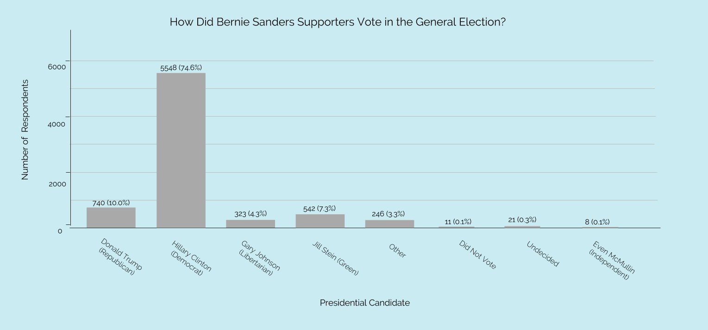

<!DOCTYPE HTML>
<!-- TO RUN: python -m SimpleHTTPServer 8888 -->
<html>
   <head>
      <script src="https://d3js.org/d3.v3.min.js"></script>
      <!-- import bootstrap and fontawesome -->
      <link rel="stylesheet" href="http://maxcdn.bootstrapcdn.com/font-awesome/4.3.0/css/font-awesome.min.css">
      <script src="https://use.fontawesome.com/6eb8964a2d.js"></script>
      <!-- import Asar (serif) and Lato (sans serif) fonts -->
      <link href="https://fonts.googleapis.com/css?family=Asar|Lato" rel="stylesheet">
      <link href="https://fonts.googleapis.com/css?family=Raleway" rel="stylesheet">

      <link rel = "stylesheet" type="text/css" href="main.css" />

   </head>
   <body>
      <div id="d3svg"></div>
      <script>
      /*TO DO:
      - make sure the text says what we want it to
      - play with the color scheme/layout?
      - ask if we want to click or mouse over each icon
      - how to get it to do nothing over icons at the end
      - when displaying, will we be on laptop or desktop?
      */

      function init() {
         //create a variable to hold the main div
         var div = d3.select("#d3svg");

         div.append("div")
            .attr("class", "header-div")

         d3.select(".header-div").append("h1")
            .html("How did Bernie Sanders supporters vote in the general election?")
            .attr("class", "header-text")

         // top text
         d3.select(".header-div").append("p")
            .html("In this game, you'll look at a representative group of Bernie Sanders voters and guess how they voted in the general elections. Did they choose Donald Trump, Hillary Clinton, or another candidate?")
            .attr("class", "header-text")

         // create svg
         var svg = div
            .append("svg")
            .attr("id", "main-svg")

         // create the svg to hold the icons
         var foreignObject = svg.append('svg:foreignObject')
            .attr("id", "foreignObject")

         //ul to hold the first ten icons (the ones the user plays with)
         var icon_holder = foreignObject.append("xhtml:ul")
            .attr("id", "icon-holder")

         //create ten user icons for user to play with
         for (var j=0; j<10; j++) {
            d3.select("#icon-holder")
               .append('xhml:li')
               .attr("class", "icon")
               .html('<i class="fa fa-user" id="d3icon"></i>')
         }

         // create a second ul for the real icons to live in
         d3.select("foreignObject")
            .append("xhtml:ul")
            .attr("id", "real-holder")
         // adding "real" icons to the bottom

         //create the trump icons
         for (var j=0; j<1; j++) {
            d3.select("#real-holder")
               .append('xhml:li')
               .attr("class", "real-icon")
               .attr("class", "icon")
               .html('<i class="fa fa-user" id="real-trump"></i>')
         }

         // create the hillary icons
         for (var j=0; j<7; j++) {
            d3.select("#real-holder")
               .append('xhml:li')
               .attr("class", "real-icon")
               .attr("class", "icon")
               .html('<i class="fa fa-user" id="real-hillary"></i>')
         }

         // create the other icons
         for (var j=0; j<2; j++) {
            d3.select("#real-holder")
               .append('xhml:li')
               .attr("class", "real-icon")
               .attr("class", "icon")
               .html('<i class="fa fa-user" id="real-other"></i>')
         }

         // create the button
         d3.select("#d3svg")
            .append("button")
            .attr("class", "btn")
            .html("Click to Begin")

      }

      function redraw(current, icon_color) {
         // on click, change color of icons
         d3.selectAll("#d3icon")
         // .style("color", "black")
         .on("click", function() {
            d3.select(this)
            .style("color", icon_color)
         });

      }

      function nodraw() {
         d3.selectAll("#d3icon")
            .on("click", function() {
               //do nothing
               //how???
               console.log("in the nodraw");
            });
      }

      function main() {
         var stages = ["beginning", "Trump", "Hillary", "Other", "end"]
         var colors = ["black", "red", "blue", "green", "black"]
         // var step = 0;
         var current_stage = stages[0]
         var current_color = colors[0]
         init();

         var button = d3.select("button")
         //going through the different stages of the game and changing things accordingly
         button.on("click", function() {
            var p = d3.select(".header-div").select("p")
            var h1 = d3.select(".header-div").select("h1")
            //going from the very start
            if (current_stage == "beginning") {
               d3.select(this).html("Guess Hillary Voters")
               h1.html("Donald Trump")
               p.html("Click on an icon to indicate a Trump vote.")
               current_stage = stages[1]
               current_color = colors[1]
               redraw(current_stage, current_color);
            }
            //ending the Trump step
            else if (current_stage == "Trump") {
               d3.select(this).html("Guess Other Voters")
               h1.html("Hillary Clinton")
               p.html("Click on an icon to indicate a Hillary vote.")
               current_stage = stages[2]
               current_color = colors[2]
               redraw(current_stage, current_color);
            }
            //ending the Hillary step
            else if (current_stage == "Hillary") {
               console.log("ending hillary")
               d3.select(this).html("Show Me How I Did")
               h1.html("Other Candidates/Did Not Vote")
               p.html("Click on an icon to indicate a vote for other.")
               current_stage = stages[3]
               current_color = colors[3]
               redraw(current_stage, current_color);
            }
            //ending the 'other' step
            else if (current_stage == "Other") {
               h1.html("How Did You Do?")
               p.html("Your guess is on top. The real breakdown is below.")
               current_stage = stages[4]
               //don't want to let them redraw anything else
               d3.select("#real-holder")
                  .transition()
                  .duration(1000)
                  .style("opacity", 1)
               d3.select(this)
                  .style("color", "grey")

               d3.select("#d3svg")
                  .append("div")
                  .attr("class", "image-div")
                  .html('</img>')
               nodraw();
               }


         })
         // redraw(current_stage, current_color);
      }

      main();

      </script>

   </body>
</html>
